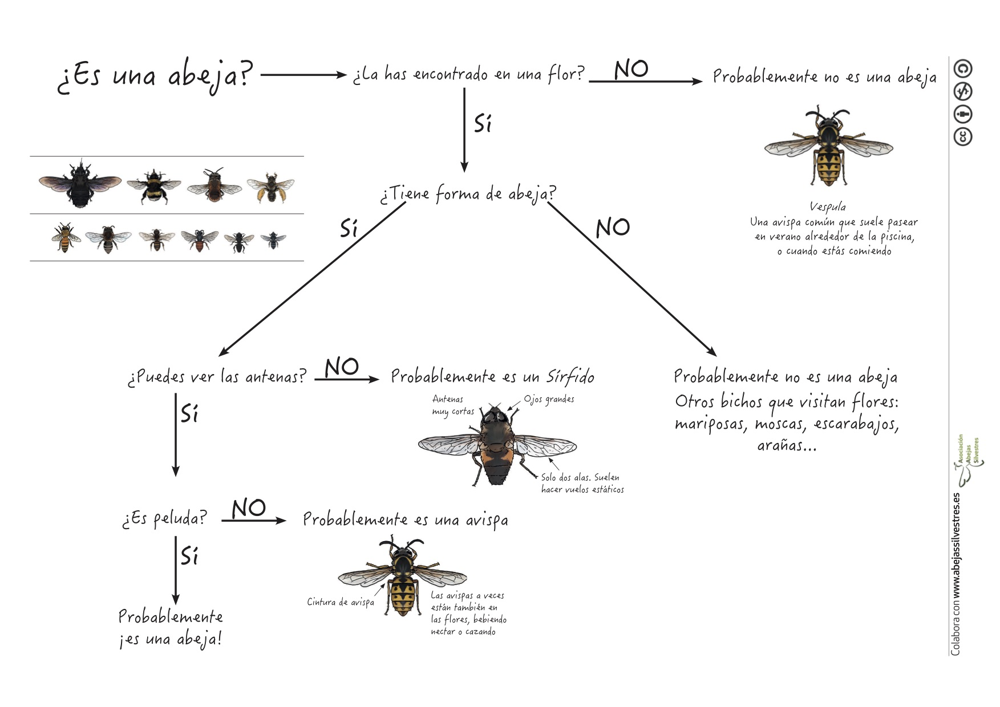

Recursos
Nos encanta crear recursos para acercar el mundo de las abejas a todo el mundo.
¿Qué estas buscando?
- Guías rápidas para identificar abejas
- Videos divulgaltivos o prácticos .
- Infografías
- Talleres y otras actividades
Guías rápidas:
¿Es esto una abeja?, ¿Y qué abeja es? Las abejas son insectos del orden de los himenópteros, uno de los más numerosos, y que engloba a especies de abejas, abejorros, avispas y hormigas entre otros. Este orden se caracteriza por la presencia de dos pares de alas membranosas y de tres pares de patas. Las abejas, en particular, se diferencian de otras especies del orden con un aspecto similar, como las avispas, en que son exclusivamente vegetarianas, alimentándose durante toda su vida (tanto larvaria como adulta) de néctar y polen. Las avispas, en cambio, aunque también consumen polen y néctar, incluyen otros animales en su dieta. Las abejas suelen ser peludas, lo que facilita que el polen se quede adherido a su cuerpo, y poseen un par de antenas largas. Debido a su dependencia total del polen y néctar se las encuentra fácilmente cerca de flores.
En pleno vuelo es muy difícil identificar la especie a la que pertenece una abeja, ya que son pequeñas, muy rápidas y muchas se parecen entre sí. La especie más común de abeja que podemos ver en la Península Ibérica es la abeja de la miel (Apis mellifera). Otras abejas que también son fáciles de ver, sobre todo por su tamaño, son los abejorros y las abejas carpinteras. En esta mini-guía (descargar en PDF) te enseñamos a distinguir a las abejas de otros insectos, y te presentamos las 6 familias de abejasdes que hay en España.

Si quieres profundizar, hazte con la imprescindible Guía de campo de las abejas de España
Videos:
¿Qué les pasa a las abejas? Seguramente habrás oído hablar de la desaparición de las abejas. En este video te explicamos qué les está pasando y cómo todos podemos ayudar a su conservación.
Más videos:
- Aprende cómo hacer un refugio para abejas solitarias.

{kind=link}
Talleres:
Y no dudes en contactarnos si quieres:
Organizar talleres o charlas de conservación, identificación y historia natural de abejas en escuelas.
Consultoría sobre acciones de conservación y servicios ecosistémicos
Usar AbejasSilvestres como plataforma para cualquier iniciativa relacionada con las abejas silvestres.